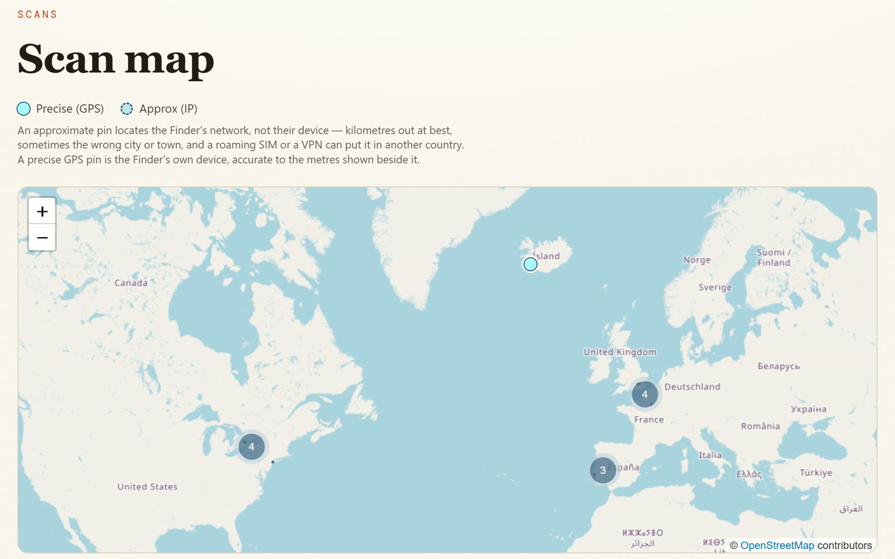

Every app here is free, with no ads, no tracking and no catch. I spend a long time on the small details. If one of them earns a place on your computer, you can chip in.
Scannable QR tags for luggage, cases and stickers, so a lost thing can find its way home.
Whoever finds your item scans the tag and leaves you a message, with their location if they allow it.
A private dashboard to make, print and archive tags, and to keep the conversation.
Nothing about you is printed on the tag itself.
In development

Tagee
The deal
Free, alwaysEvery feature, for everyone. Nothing is locked behind a donation.
PrivateNo ads, no tracking, no accounts. What you do in an app stays on your computer.
Asked onceOne small thank-you card, after real use. "Don't ask again" means it.
Thank you ♥
This page is in compliance with GitHub’s Terms of Service. It is a static page, which is what GitHub Pages is intended to host (Additional Products and Features, GitHub Pages). The Support link goes to Ko-fi, a voluntary donation page: GitHub Pages allows “donation buttons and crowdfunding links” (same section), nothing is sold here, and nothing is locked behind a donation. The page is mainly about the free apps it lists, not advertising (Acceptable Use Policies, section 10). The pictures of the apps are the maker’s own. The linked Clipee overview video is hosted on this site as one 16 MB file, with no third-party player and no tracking. Pages has no rule against video and publishes sites up to 1 GB with a soft bandwidth limit of 100 GB a month, far above this use (GitHub Pages limits; Acceptable Use Policies, section 9). Links to the apps’ GitHub release pages and the video are plain links, with no automated or bulk activity. Checked 29 October 2026.